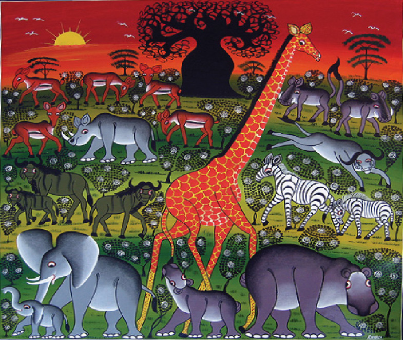
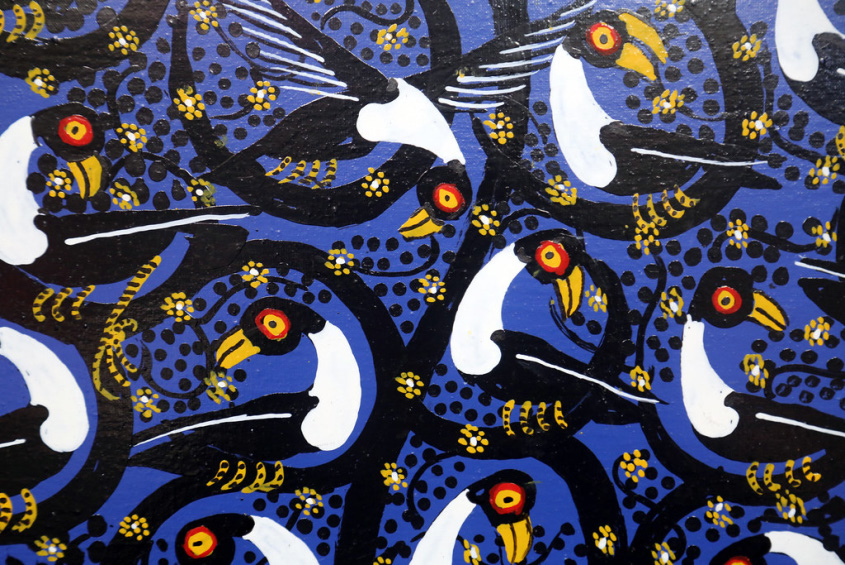
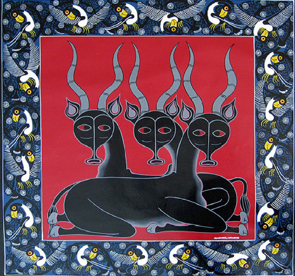

Figure 5.4: Tingatinga painting style made up of bright colours
Source: https://commons.wikimedia.org/wiki/File:Rashidi-TT4785.jpg. Retrieved on 26th November 2022

Figure 5.5: Tingatinga painting style made up of bright colours
Source: https://commons.wikimedia.org/wiki/File:Rashidi-TT4785.jpg. Retrieved on 6th October 2023

Figure 5.6: Paintings made by Tingatinga art style
Source: https://commons.wikimedia.org/wiki/File: Mwamedi Chiwaya-TT4782.jpg. Retrieved on 26th November 2022